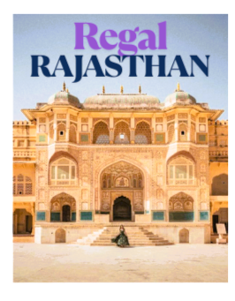

- Jaipur - The Pink City, known for its palaces and forts.
- Udaipur - The City of Lakes, famous for its beautiful lakes and palaces.
- Jaisalmer - The Golden City, known for its desert landscapes and forts.
- Jodhpur - The Blue City, famous for its blue-painted houses and Mehrangarh Fort.
- Camel Safari in Thar Desert - Experience the desert on a camel's back.
- Folk Dance and Music - Enjoy the vibrant culture through traditional performances.
- Local Cuisine - Savor the flavors of Rajasthan with dishes like Dal Baati Churma.
- Pushkar Camel Fair - A vibrant festival showcasing the culture and traditions of Rajasthan.
- Desert Festival in Jaisalmer - A celebration of Rajasthani culture with music, dance, and competitions.
- Teej Festival - A monsoon festival celebrated with traditional songs and dances.
- Dal Baati Churma - A traditional Rajasthani dish made of lentils and wheat balls.
- Gatte ki Sabzi - A curry made with gram flour dumplings.
- Laal Maas - A spicy mutton curry, a must-try for spice lovers.